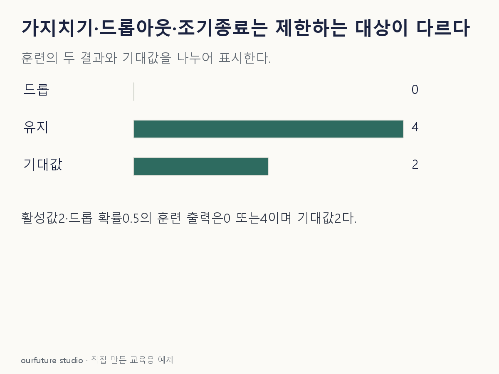

조건을 바꾸며 확인하기
지정 마스크의 산술이며 실제 무작위 추출·신경망 학습·MC dropout 추론이 아니다. p=0에서는 드롭 사건이 발생하지 않는다.
설명 그림과 비교하기
아래 그림과 표는 고정된 설명 예제입니다. 기본·변형 중 어떤 조건인지 캡션을 읽고, 바꾼 입력의 결과는 계산 칸에서 확인하세요.

같은 문제를 직접 골라 보기
신경망 훈련마다 일부 활성값을 무작위로 0으로 만들고, 통상 평가 때는 이 동작을 끈다.
조건을 더 바꾸면?
검증 손실이 epoch 1~3에서 0.50·0.40·0.43이다. 이 기록에서 가장 작은 손실의 가중치를 복원하려면 어느 epoch를 고르는가?
변형 풀이 확인
epoch 2다.
최소 손실 0.40이 두 번째에 있다. patience와 종료 여부는 별도 설정이며 최종 훈련 epoch를 자동으로 최선이라고 가정하지 않는다.
구조를 줄이나, 잠깐 끄나, 반복을 멈추나.